Templates e Userdata
Neste tutorial demonstraremos:
- Como criar templates, análogos às imagens das nuvens públicas
- Usando userdata para customizar instâncias a partir de templates
Utilizaremos os recursos criados no tutorial anterior, Compute e Networking. Execute-o se ainda não o fez.
Banco de dados
Para suportar a aplicação que criaremos a seguir, precisamos de um banco de dados, que criaremos conforme segue:
Criação da instância
- No menu de navegação à esquerda clique em Compute, Instances
- Clique no botão Add instance +
- Em Account coloque a sua conta.
- Em Templates, escolha Community, digite ubuntu na busca e escolha Ubuntu-Server-22-Locaweb-VPS
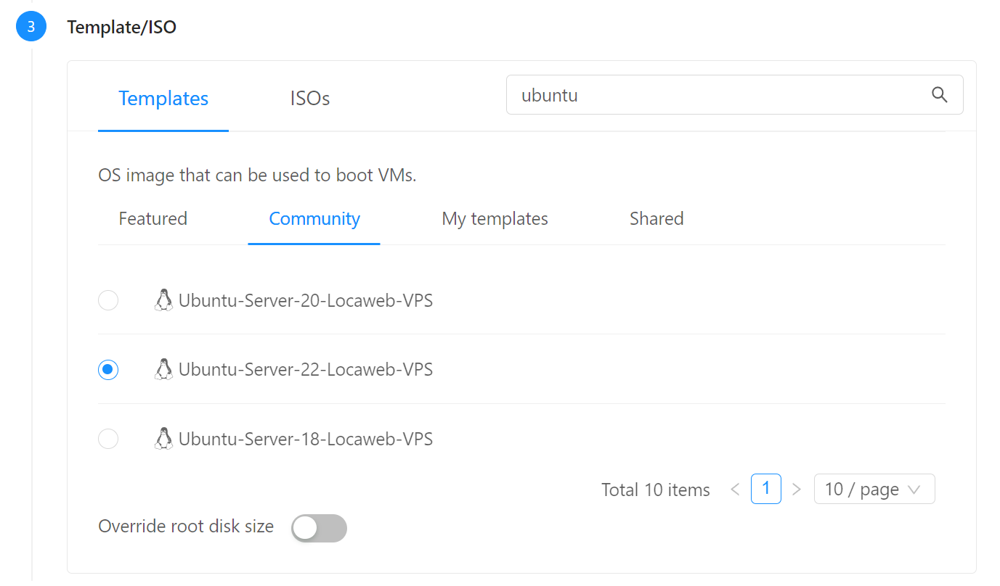
- Em Compute offering escolha TBD (criar offers com CPU/memória fixas)
- Em Data disk mantenha No thanks
- Em Networks escolha a rede que criou, minha-rede
- Em SSH key pairs escolha a chave criada no passo anterior, por exemplo, minha-chave
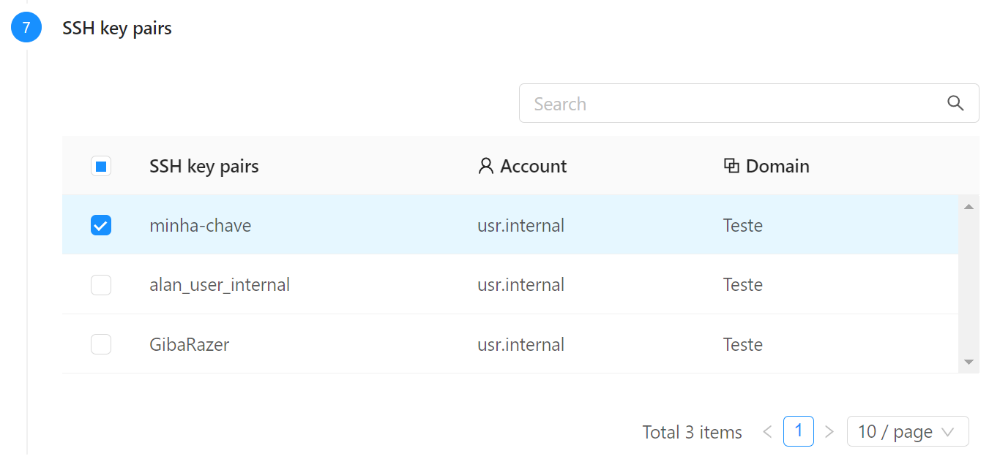
- Coloque o nome bd e clique Launch instance
Port forwarding
Ao contrário do Static NAT, o método de Port Forwarding permite a reutilização de um mesmo Endereço IP público para diferentes instâncias, em função da porta acessada.
Por exemplo, para acesso SSH podemos encaminhar a porta 22000 de um IP para a instância web, a porta 22001 do mesmo IP para bd e assim por diante.
Isso proporciona mais um nível de segurança além do firewall, porque sem um encaminhamento explícito a instância fica inacessível pela internet pública. É um bom caso de uso para a instância bd, para a qual precisamos abrir apenas a porta de SSH para fora da minha-rede.
Acesse a rede pré-criada (minha-rede) e clique sobre o primeiro IP da lista, que possui a nota source-nat ao lado dele.
Clique na aba Firewall e crie a regra:
Source CIDR: 0.0.0.0/0; Start port: 22000; End port: 22099 (para aceitar conexões SSH num range de portas).
Acesse a aba Port forwarding e adicione as entradas:
- Private port: 22-22; Public port: 22000-22000; Protocol: TCP; botão Add...: web
- Private port: 22-22; Public port: 22001-22001; Protocol: TCP; botão Add...: bd
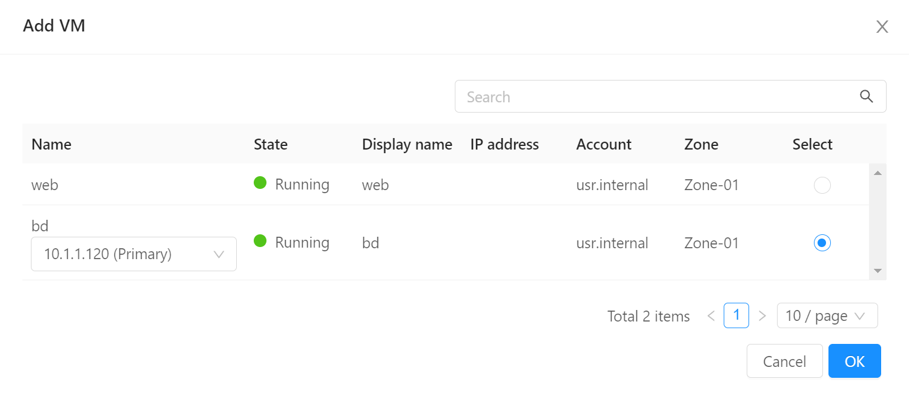
Info
Note como podemos usar portas externas distintas (22000 e 22001) como mesmo IP público para acessar serviços distintos (web e bd) que possuem a mesma porta (22) no back-end.
Instalação do MySQL e banco
Agora acesse o servidor de banco de dados, lembrando de usar a porta 22001:
# Substitua o endereço IP abaixo pelo que foi configurado com port forwarding acima
ssh root@200.234.208.5 -p 22001
Para instalar o MySQL:
apt update
apt install mysql-server
Para permitir conexões da rede, edite o arquivo:
nano /etc/mysql/mysql.conf.d/mysqld.cnf
bind-address de 127.0.0.1 para 0.0.0.0 reiniciando em seguida:
sudo systemctl restart mysql.service
Finalmente, para criar o banco:
mysql -u root -h localhost
No prompt to MySQL copie os comandos:
CREATE DATABASE `example_database`;
CREATE USER 'example_user'@'%' IDENTIFIED BY '<senha_bd>';
GRANT ALL PRIVILEGES ON `example_database`.* TO 'example_user'@'%';
FLUSH PRIVILEGES;
CREATE TABLE example_database.todo_list (
item_id INT AUTO_INCREMENT,
content VARCHAR(255),
PRIMARY KEY(item_id)
);
Info
Embora estejamos permitindo conexões do meu_usuario de qualquer host, lembre que a rede (minha-rede) é isolada. Não havendo portas criadas em firewall nem forwarding para o MySQL, o servidor de banco permanece fechado a conexões da internet pública. A configuração acima permite acesso por qualquer servidor, desde que dentro da mesma rede.
Note, também, que o usuário root, por default, só permite conexões do próprio servidor (localhost)
Agora criaremos uma tabela e preencheremos com dados para uso pela aplicação. Ainda no prompt do MySQL execute:
USE example_database;
INSERT INTO todo_list (content) VALUES ("Minha primeira tarefa");
INSERT INTO todo_list (content) VALUES ("Minha segunda tarefa");
SELECT * from todo_list;
EXIT;
Instalação da aplicação
Info
O exemplo que segue é ilustrativo e a aplicação é muito simples. Mas a lógica serve para aplicações de qualquer natureza e complexidade, sejam monolitos, microsserviços, back-ends etc.
Para ilustrar o funcinamento de port forwarding entre via SSH no servidor web:
# Substitua o endereço IP abaixo pelo que foi configurado com port forwarding acima
ssh root@200.234.208.5 -p 22000
E instale o PHP para Apache:
apt install php libapache2-mod-php php-mysql
Para testar,
cat << 'EOF' > /var/www/html/info.php
<?php
phpinfo();
?>
EOF
E acesse http://200.234.208.120/info.php (aqui usamos o IP mapeado via Static NAT para a instância web).
Agora criaremos nossa aplicação, que lista a tabela todo_list:
nano /var/www/html/todo.php
Copie o conteúdo, substituindo o endereço IP pelo do servidor bd, que pode ser lido no painel do CloudStack, e pela senha que utilizou para o banco:
<?php
$user = "example_user";
$password = "<senha_bd>";
$database = "example_database";
$table = "todo_list";
$host = "10.1.1.120"; // Coloque o IP privado do servidor bd no CloudStack
try {
$db = new PDO("mysql:host=$host;dbname=$database", $user, $password);
echo "<h2>TODO</h2><ol>";
foreach($db->query("SELECT content FROM $table") as $row) {
echo "<li>" . $row['content'] . "</li>";
}
echo "</ol>";
} catch (PDOException $e) {
print "Error!: " . $e->getMessage() . "<br/>";
die();
}
?>
Dica
Note que usamos o IP privado do bd, pois o servidor web o acessa pela rede privada. Com isso, não precisamos expor o bd para a rede pública.
E acesse http://200.234.208.120/todo.php (use o IP mapeado via Static NAT para a instância web).
Página com CPU alta
Para testar o autoscaling mais adiante, criaremos uma página com alto consumo de CPU. Não se preocupe com o conteúdo.
Curiosidade
Eu pedi para o ChatGPT escrever uma página em PHP que consome muita CPU e gera resultados aleatórios. Ele respondeu com um método estatístico para calcular o valor de Pi.
Na sessão SSH da instância web execute:
nano /var/www/html/pi.php
<?php
// Define the number of random points to be generated
$numPoints = mt_rand(1e6, 1e7);
$insideCircle = 0;
// Generate random points and check if they are inside the unit circle
for ($i = 0; $i < $numPoints; $i++) {
$x = mt_rand(0, mt_getrandmax() - 1) / mt_getrandmax();
$y = mt_rand(0, mt_getrandmax() - 1) / mt_getrandmax();
if (sqrt($x * $x + $y * $y) <= 1) {
$insideCircle++;
}
}
// Estimate the value of Pi using the Monte Carlo method
$piEstimation = (4 * $insideCircle) / $numPoints;
echo "Estimated value of Pi: $piEstimation";
?>
Teste a página fazendo refresh no endereço http://200.234.208.120/pi.php algumas vezes e vendo o resultado mudar (use o IP mapeado via Static NAT para a instância web).
Userdata
No código acima, o endereço do host do banco de dados e a senha estão hardcoded, impedindo que o servidor sirva de template para deployment em outros ambientes ou que seja replicado para load balancing.
Então:
-
Edite o arquivo
/var/www/html/todo.phppara:<?php include '/var/www/config.php'; // Linha acrescentada $user = "example_user"; $password = DB_PASSWORD; // Valor hardcoded substituído por uma variável $database = "example_database"; $table = "todo_list"; $host = DB_HOST; // Valor hardcoded substituído por uma variável try { $db = new PDO("mysql:host=$host;dbname=$database", $user, $password); echo "<h2>TODO</h2><ol>"; foreach($db->query("SELECT content FROM $table") as $row) { echo "<li>" . $row['content'] . "</li>"; } echo "</ol>"; } catch (PDOException $e) { print "Error!: " . $e->getMessage() . "<br/>"; die(); } ?> -
Crie um novo arquivo fora da raiz do site:
Insira o conteúdo (use o IP e senha do seu banco de dados):nano /var/www/config.phpE proteja as permissões:<?php define('DB_HOST', '10.1.1.120'); // Coloque o IP privado do servidor bd no CloudStack define('DB_PASSWORD', '<senha_bd>'); ?>Acesse novamentechown www-data:www-data /var/www/config.php chmod 600 /var/www/config.phphttp://200.234.208.120/todo.phppara testar (use o IP mapeado via Static NAT para a instância web). -
Finalmente, apague o arquivo criado:
Note que a aplicação quebrou. O segundo comando instrui o servidor a carregar o Userdata no próximo boot.rm /var/www/config.php cloud-init clean -
No menu de navegação à esquerda clique em Compute, Instances e clique na instância web
- Clique no botão Stop instance e confirme.
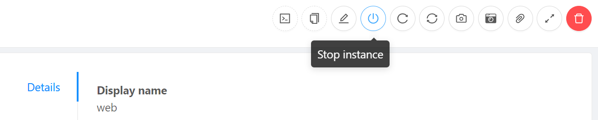
- Clique no botão Edit instance
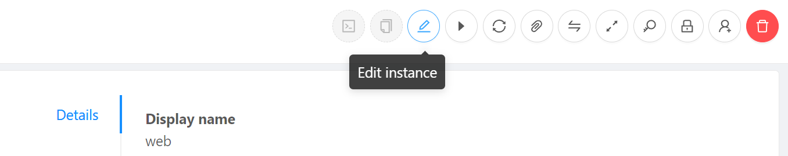
- No campo Userdata, cole, substituindo o IP interno do servidor bd:
#cloud-config write_files: - path: /var/www/config.php content: | <?php // Use o IP privado do servidor bd no CloudStack define('DB_HOST', '10.1.1.120'); define('DB_PASSWORD', '<senha_bd>'); ?> owner: "www-data:www-data" permissions: '0600'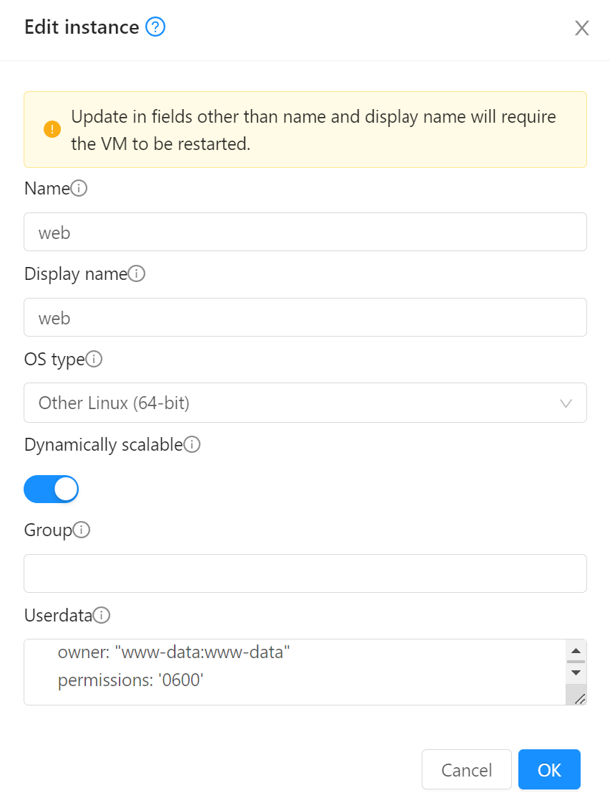
- Reinicie o servidor. Após aguardar alguns instantes:
- Reinicie a sessão SSH e verifique que o arquivo
var/www/config.phptem o conteúdo conforme acima - Verifique que a página funciona normalmente
- Reinicie a sessão SSH e verifique que o arquivo
O que fizemos até agora?
Recapitulando:
- Separamos as configurações num arquivo
config.phpà parte, fora da raiz do site - Usamos o mecanismo de cloud-init para carregar as configurações a partir de uma definição na instância.
- O que falta: agora transformaremos a instância num template sem configurações. Este template poderá ser carregado com diferentes campos de Userdata refletindo diferentes configurações, exemplo, dev, staging, production
Criação do template
-
Não queremos configurações no template, portanto execute via SSH na instância web:
O segundo comando limpa vestígios de carregamentos anteriores do cloud-init.rm /var/www/config.php cloud-init clean --logs -
Pare a instância.
-
No menu de navegação à esquerda clique em Compute, Instances, clique na instância web e em Volumes. Clique no link do volume (ROOT-XXXX)
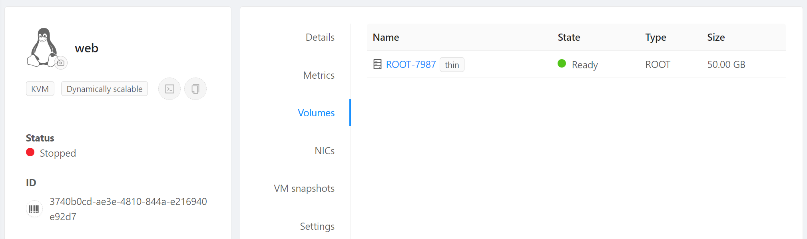
- No canto superior direito, selecione Create template from volume
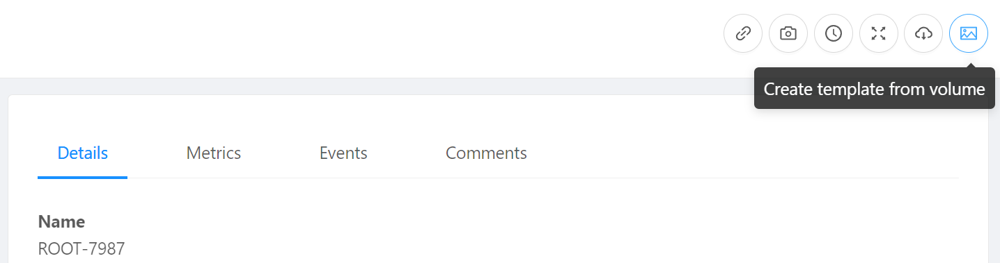
- Preencha da seguinte forma e dê OK:
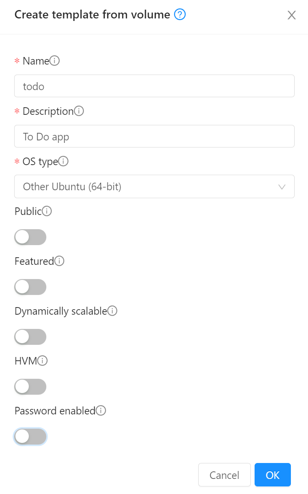
Userdata com variáveis
No próximo passo, criaremos um Userdata parametrizável, ou seja, onde o usuário pode escolher os valores DB_HOST e DB_PASSWORD
- No menu de navegação à esquerda clique em Compute, User Data, Register a userdata +
- No nome, colocar tutorial. Em Userdata colar o código abaixo:
## template: jinja #cloud-config write_files: - path: /var/www/config.php content: | <?php define('DB_HOST', '{{ ds.meta_data.db_host }}'); define('DB_PASSWORD', '{{ ds.meta_data.db_password }}'); owner: "www-data:www-data" permissions: '0600'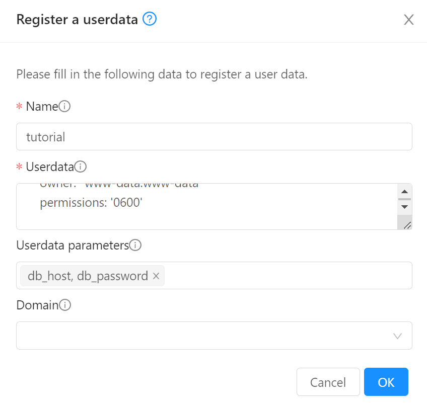
- Antes de dar OK preencha o campo Userdata parameters com
db_host, db_password
Info
Na primeira linha ## template: jinja configuramos o cloud-init para processar os valores que o CloudStack passa dentro das chaves {{ }}. Isto permite a parametrização do Userdata.
Recriação da instância
Agora criaremos uma nova instância a partir do template:
- No menu de navegação à esquerda clique em Compute, Instances
- Clique no botão Add instance +
- Em Account coloque a sua conta.
- Em Templates, escolha My templates e escolha To Do app
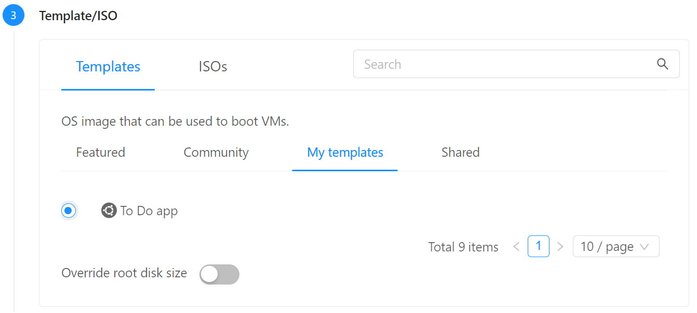
- Em Compute offering escolha TBD (criar offers com CPU/memória fixas)
- Em Data disk mantenha No thanks
- Em Networks escolha a rede que criou, minha-rede
- Em SSH key pairs escolha a chave criada no passo anterior, por exemplo, minha-chave
- Em Advanced mode, habilite Show advanced settings
- Em Stored Userdata, selecione tutorial e preencha db_host:
10.1.1.120(coloque o IP privado do servidor bd no CloudStack); db_password:<senha_bd>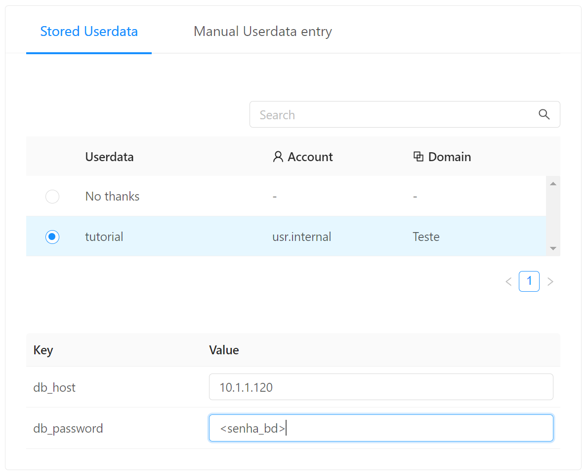
- Em name coloque teste-template e clique Launch instance
- Em Compute, Instances verifique que a instância recém criada a partir do template está ligada e a anterior desligada
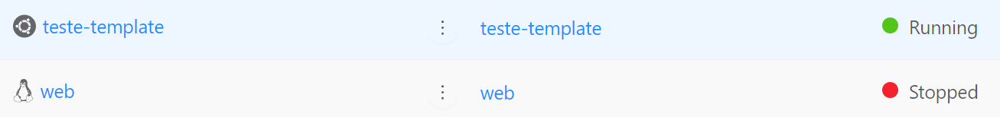
- No menu à esquerda acesse Networks, Guest networks, minha-rede, Public IP addresses e clique no endereço IP que fora mapeado via Static NAT para o servidor web
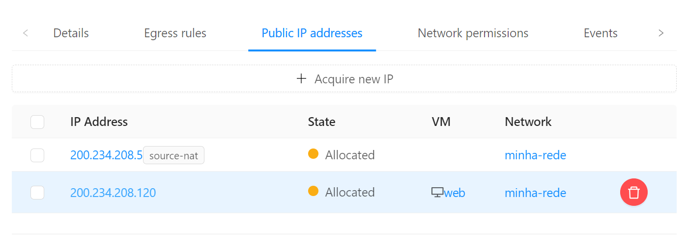
- Clique sobre o IP. Vamos desvincula-lo da instância web:
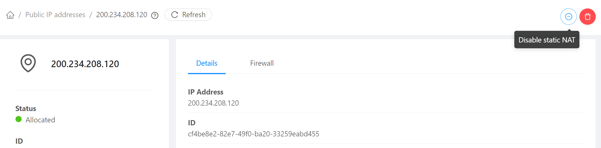
- E agora vincule o mesmo IP à nova instância teste-template seguindo o mesmo procedimento clicando em Enable Static NAT e escolhendo-a como destino.
- Note que é necessário recriar as regras de firewall para o IP após ter sido remapeado para nova instância:
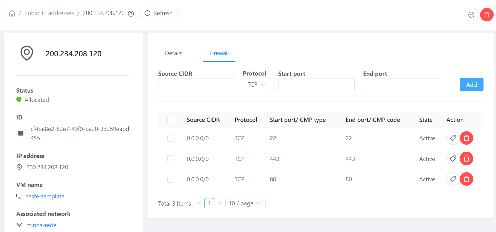
Usando o endereço IP recém remapeado, acesse-o no browser em http://200.234.208.120. Deve aparecer a página padrão do Apache.
Acesse também as páginas, substituindo pelo endereço IP recém adquirido:
http://200.234.208.120/info.php
http://200.234.208.120/todo.php
http://200.234.208.120/pi.php
Se seguiu os passos até aqui, tudo deve funcionar, demonstrando que o servidor criado a partir do template possui toda a programação inserida previamente.
Lembrete
Certifique-se de ter remapeado via Static NAT o endereço IP designado para a nova instância teste-template, criada a partir do template. Certifique-se de que a instância anterior web esteja desligada para ter certeza de que está acessando a nova instância criada a partir do template.